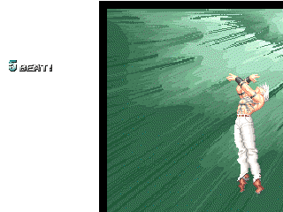
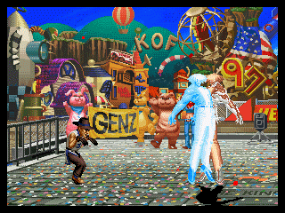

OROCHI製作にあたって・・・。
＜基本動作編＞
まず空中に浮いてる。典型的な足払いなら当たらない。庵とかテリーみたいなのはさすがに喰らう。そして最大の特徴、常に光ってる。なんと神々しい。しかも途中で色が無くなったり反転したりする。しかも上半身だけ。MUGENじゃ無理。多分。しかしながら、これは何とかそれっぽくできたかな。でもこの処理のせいで燃えたり痺れたりできないんだな。相手のステート内にいるときはいいけど。
＜通常技を作ろう編＞
何かおかしな通常技だなおい。キックなんてジェノサイカターじゃん、なんて思いつつ作成。ガードでも削れるぞ。
＜必殺技を作ろう編＞
謎の飛び道具
えらく高性能。確認したところ絶対に消えない。というか消える処理がされてないと思われる。しかも複数ヒット。こんな素晴らしい飛び道具なので、再現には気合入れた。
まず動き。厳密に言うと飛んでない。黒い円盤が次々と前方に発生していくモンだ。ということで、イグニスのイーディアンブレイドでも使った、ヘルパーからヘルパーが次々に発生する処理をしたっす。そしたら問題が生じた。飛び道具なのに画面端でノックバックが。そこでヘルパーの姿を隠し、そのヘルパーが一回一回Projを出すという処理に落ち着いた。結構上手い方法と思うがどうよ。普通に相手の飛び道具も相殺できる点も良し。ground.cornerpush.veloffを知ったのはだいぶ後であったとさ。攻撃判定のprojとかき消し判定のprojと分けるという新しい試みも。
鏡割れる
これが原因。この技があまりにカッコイイせいでオロチを作りたくなった。モチ必殺技の中では一番最初に作った。特に苦労したのが相手の吹っ飛び方よ。パリーンといった後ピューン・・・ポト・・・、これよ。マジかっこいい。
攻撃判定けっこうでかいの。しかも追い討ち不可。
落雷
特になーし。ここですか？
飛び道具を跳ね返せ
実はオロチ様こんな技を隠し持っていた。そのモーションはほんの一瞬でリスクは無し。まあ跳ね返したところで発生があまりに遅くて誰も喰らいそうにない。これでKOFのボスのなかで飛び道具を跳ね返せないボスはゲーニッツだけという事が判明した・・・。だから何だ。
＜超必殺技編＞
何と神々しい・・・、無に還ろう
これこそボスの技よ。初めて見たときは大変ショッキングだった・・・。画面全体攻撃かよ・・・逃げ場無えじゃん、と思った。格ゲー初じゃないかな（未確認）。
再現にはメチャクチャ苦労した。飛んでく相手が光のスプライトの外へ・・・。だ・・・だせえ・・・。なんかハリボテの裏が見えちまったような感じ。

↑
非常に情けない事態。しかも切り出し手抜き。
本物のオロチ様はというと、技の終始画面が全く移動しない処理が。MUGENでは無理。だってこの攻撃Hitdefだもの。ScreenBound使ねぇ・・・。
悪あがきにHitdefにCameraとか項目入れてみたらオカシイ画面の動きになり断念。相手をカメラが追わないように見えないプレイヤー扱いのヘルパーを入れたりとメッチャ苦労。どれも満足いかず・・・。camera関係ムズイ。ちなみに問題の光はExplod。ある日、Explodにはbindtimeなるものがあることを思い出す。
・・・・・・・解決。カメラの件は忘れよう。
さらには攻撃判定を画面内だけ（厳密には高さだけ）にして、空中で喰らうとお手玉状態になるのと、KOしたら直ちに技が終了するのも再現。
ついでに相手が画面中央にいると倍ヒットするのも再現。あれ何？
魂を抜こう
これもおかしな技だな。ただのコマンド投げなら楽なのに・・・。というかスプライトの軸合わせに疲れた。オロチと魂を別々に切り出したからな・・・。一緒にやっちまえばホント楽なのに。本体とスプライトのパレットは別々にした方が良いことあるわな。っていうか常識か。
相手を引き寄せるのは飛び越せないヘルパーを相手に設置する、とそれほど苦労しなかったけど、問題は相手がオロチを飛び越えたときよ。
本物の方は、飛び越えた後は向きを変えるわけじゃなくて反対向きの分身が現われる（↓写真参考）。しかもカラーおかしい。こりゃぁマネできん。という訳で普通にターンすることに決定。
実はラストの魂を潰すモーション・・・。こっそりhitdef使ってました。すごい小さい判定で。回転して相手が飛んでくので、animtype = Diagupでよし！みたいな。チームプレイの事なんてあんま考えないし。逆に変な事態になった方が面白いかな・・・とか思ったけど、やっぱり最後まで面倒見よう。て事で、AnimExistを使用。これは初めて。簡単かと思ったら何故かあ回転吹っ飛びのアニメの無いキャラでエラーが。ずっと悩み続けた挙句、AnimExistをselfAnimExistに変えたらエラーが止んだ。よくわかんないけど・・・まあ良し。

地球意思「ふふふ・・・。逃がさぬぞ。こちらに来い！」
肉屋「き・・・きしょいでヤンス！分身したでヤンス！」
＜無に還ろう2＞
2002のクリスのMAX2のグラフィックを使用。これは前々から考えてた。2002では数少ないかっこいいグラフィックだと思う。ま、出の速さ、威力と普通のと同じだけど、無敵時間と技の終了の隙は多少違う。2002の声はあまりに97と違うので入れなかった。
＜塩沢クールチョイ＞
以前暇つぶしに改造しまくったキャラに、クールチョイを入れ、GGXのザトーの声をいれたら周囲に大好評だった為、オロチにも搭載。イメージ的にも合ってると思う。もうあの声が聞けないと思うと・・・。くっ・・・。
＜初の固定ヘルパーぢゃストライカー編＞
いつも画面端から現われて攻撃して帰るというのにはもう飽きた。というか羅将神ミズキ見てやりたくなっただけ。外見はとりあえずは未だに意味が良く分からない「アンブロジャの思念」を使用。ていうかパピーの色違いだろ・・・（今更だけど）。これは言うまいと思ったが、スカーフ見えてんぞオイ。『オロチ犬』と命名。
まずは立ち回り。常にparentdistで飼い主について来る。そんなに苦労はしなかった。ある程度距離が離れると走ってくる。何だ、意外と愛らしいな。
攻撃はまずは普通に猛獣に変身して噛み付く技。ミズキと同じ。体当たりは使い道がほぼ一緒だから入れない。
次は飛び道具を吐き出す技。黒子八極弾から強い影響が。ランダムだから面白いかも。アタリとハズレを入れたら面白いかな・・・。
その次、出ましたおデブさん。これが前からやりたかった。画面端から超肥満アメリカン屁コキ忍者が登場。しかも当て身という微妙さがポイント。ところで、よく見るとアースクエイクって結構カワイイな。キバとかあるし。
Explodとの葛藤
相手に複数の攻撃がヒットしたとき等によく使うこれ。例えば、
type = Explod
triggerall = Movehit
trigger1 = AnimElem = 1
trigger2 = AnimElem = 2
trigger3 = AnimElem = 3
とかやったとする。画面全体攻撃のヒットスパークも最初はこれだった。空中ヒットだとHitDefのsparkxyの場合は相手の位置にエフェクトが表示されないから。でもこの命令って怪しい部分が有るような無いような。一発目が当たればその瞬間にtriggerallは満たされて四発目が外れても表示されたりすることがある。相手の起き上がりに最後の一発が当たった時はエフェクトが表示されなかった。movehitresetとかでいけるんだけどメンドイし。
なんか怪しくてうんざりして、やっぱりHitdef内のヤツのほうが確実に当たったら出るって感じで良いと思い、新しい事を考えた。相手の高さを常に計算しVarに置き換えて sparkxy = -10,-60 + var(11)みたいな感じにした。そしたらマジ大成功。相手がしゃがめば低くできるし。
この方法結構良くねぇ？！すごいスマートだと思うがどうよ。興味があればCNSファイルを見て下さいな。「知ってたわ」って人がいたら偉そうにしてすいません。
その他
初の試みのKOF97っぽいKOの演出。ヒット音がすべて「ドガーーン」となり赤いフラッシュがチカチカする。結構気に入ってるかな。これからのキャラに取り入れよう。